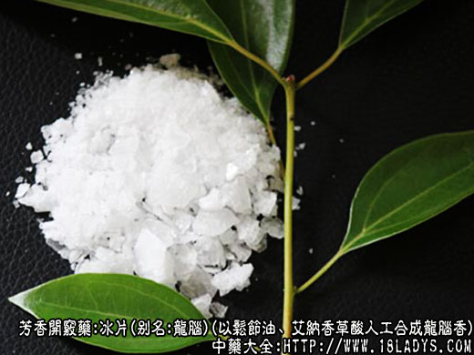

本品为常用中药。始载《本草纲目》，列入木部香木类，原名龙脑香。
别名：龙脑、梅片、洗片、机片、结片。
来源：本品现市场上有两种。一种是人工合成龙脑香，以松节油、艾纳香草酸为原料，用硼酸酐催化合成；另一种是以菌科植物属大枫艾的叶片为原料，经蒸馏加工提取而成，又名艾片。因主产于贵州故天津市定名贵州梅片。
产地：
人工合成冰片、主产于广州、株洲、南京、天津等地的香料厂或制药厂。
贵州梅片、主产于贵州罗甸、独山以及广西天峨、桂林等地。
性状鉴别：
人工合成冰片为透明或半透明的片状结晶形如碎的薄冰，大如梅花片（瓣）小如砂粒，洁白色，质松脆，有层纹可剥裂。手捻既成粉末。气清香，味微苦，辛凉。易燃烧，燃烧时有黑烟，无残留。
贵州产天然梅片，为半透明稍厚的片状结晶，亦如薄冰之破碎，片、块较均匀，大如豆瓣，纯白色。质略坚硬，，无层纹，手捻不易粉碎。气清香，味较苦而辛凉。易燃烧，烧时有黑烟，无残留。
以上两种冰片均以片大，色白，气香凉者为佳。
主要成分：含挥发油、主成分为左旋龙脑，又含少量桉树脑，左旋樟脑。
药理作用：芳香开窍，散热止痛。作用为：
（1）兴奋中枢神经系统。
（2）抗菌。体外试验其酊剂对金黄色葡萄球菌、大肠杆菌、猪霍乱菌有抑菌作用，其粉剂和膏剂对羊毛样小孢子菌、红色癣菌等有全抑作用。
炮制：研细，生用。
性味：辛、苦、微寒。
归经：入心、肝经。
功能：清热通窍，消肿止痛。
主治：神志昏迷，咽喉肿痛，木赤，疮疡。
临床应用：
（1）内服兴奋中枢神经系统，提神醒脑，辅助麝香等药，用于热性病神志昏迷，高热惊厥、抽搐、中风口噤、风痰闭塞等。常用的芳香开窍丸散，大都含有冰片。
（2）外用清热（消炎）消肿止痛，治耳鼻咽喉及口腔某些化脓性疾患，，取其有抗菌消炎作用，有多用于治咽喉肿痛、小儿鹅口腔、中耳炎、外耳道炎等，常配硼砂、朱砂等，方如冰硼散。
又据最近报道，试用冰片凡林软膏热敷（用热水袋）心窝部治老年慢性气管炎，有一定疗效。
用量：0.3～1.2g入丸散剂。
处方举例：
冰硼散（《医宗金鉴》）：冰片1.2g、硼砂15g（炒）、朱砂1.8g、元明粉15g，各研极细末，和均，用吹药器或纸筒喷入患处，每天5～6次。
注：
（1）解放前冰片多进口，来源于日本或德国。解放后制出了国产冰片，不但满足了国内医药和香料行业的需要，还可大量出口外外销。品质超过日本产品，并销往日本。
（2）国外另有一种以龙脑科植物龙脑香的树干经蒸馏而成的结晶品，形味与上品相同。
（3）全国机制冰片的合成方法，大体一致，均以松节油、草酸为原料，只是使用的催化剂不同。
天津加工方法如下：
①原料处理。松节油放粉瘤器中加温155～161℃得到漩烯，用氯化钙干燥。草酸（带两个结晶水）在温度110～115℃之间烘干，脱去结晶水，成为无水草酸。硼酸（催化剂）经500℃高温煅烧，得到硼酸酐，球磨机粉碎。
②脂化。松节物放反应罐内，升温在40℃，加入催化剂硼酸酐，升温至55～57℃，在分批投入草酸，整个反应需要12.5小时。成为深紫色稍微粘稠的液体。投料比为100:1～2:22。
③水洗。用80℃2倍的水进行搅拌冲洗三次，把多余的草酸和催化剂去掉。
④回收轻油。用1公斤压力蒸汽蒸馏，将未反应完的蒎烯（已成另外物质）回收，回收量为投料量的8%～10%。
⑤皂水分解。在皂化罐内升温至105～110℃，加入40%苛性钠（料50kg，固体碱10kg）搅拌，经水分离，水蒸汽蒸馏，冷却后得到粗冰片。用离心机甩干。
⑥提纯。第一次粗冰片0.5kg，汽油7.5kg，升温溶解后，用白布过滤去杂，第二次料0.5kg，汽油0.5kg。升温溶解后，用80支府绸过滤去杂质。
结晶后去汽油晾干，过筛分等，包装。